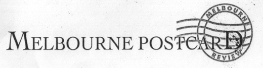

bpepper@blackpepperpublishing.com
Surviving Australian Poetry:
The New Lyricism
David McCooey
Australian Poetry,
Vol. 4, No. 7, June 2005
Contemporary
Australian poetry, like most Anglophone poetry, is not central to
public literary culture. Australian poetry, with its small audiences,
reliance on small presses and dwindling governmental and university
support, is generally seen as endangered. But why has a thing so
culturally marginal also so routinely been described as
‘dangerous’? Why have Australian poets for so long
suffered
from a bad press? Australian poetry, until perhaps very recently, has
often been seen as wracked by factionalism (making it a kind of
cultural equivalent of the Labour Party). The factionalism of the 1970s
especially gave Australian poets a reputation of being competitive,
internecine and self-interested...
A decade
ago things seemed dire for
poetry in Australia. The major players in poetry publishing - Angus
& Robertson, Penguin, Heinemann, and Picador - were struggling
and
were soon to withdraw more or less entirely. In the case of Angus
&
Robertson, this meant dropping a list that included Kenneth Slessor,
Judith Wright, Rosemary Dobson, James McAuley, David Campbell, and
Francis Webb (in other words, most of the canonical poets of that
generation) as well as Les Murray, David Malouf, John Forbes and Geoff
Page. Only the University of Queensland Press remained a vibrant
publisher of poetry, but as far as poetry went they became for the most
part - rather discreetly - a regional press, publishing
Queensland-based writers. While publishers might disappear, poets
don’t, and smaller presses (either new or consolidating)
filled
the publishing vacuum, among them Five Islands Press, Duffy &
Snellgrove, Brandl & Schlesinger, Black Pepper, and more
recently
Salt Publishing (an Anglo-Australian venture) and Giramondo.
While
newspapers have almost abandoned poetry, Cordite,
a poetry-dedicated tabloid, was launched in 1997, and literary journals
remain strong supporters of contemporary poetry, from established
journals such as Southerly,
Overland
and Meanjin
to newer titles like Going
Down Swinging, Ulitarra,
Sligo, and
the internationally oriented Heat
and Boxkite.
The rise of ethnic minority writing has been seen in journals such as Outrider and
non-English publications such as Otherland,
the Australian Chinese-language literary journal edited by Ouyang Yu.
Among poetry-dedicated journals there are or has been Saltlick New Poetry
(now defunct), Papertiger
(on CD Rom), Jacket
(on line) and Blue Dog.
Many of
these publishing houses and
journals were founded by poets. The immense energy and productivity of
Australia’s poet-publishers and poet-editors suggest that
poetry
is largely supported by individuals rather than institutions. Ron
Pretty - the founder of Five Islands Press, Blue Dog, and the Poetry
Australia Foundation - is one of the most active participants in this
supportive work. He is also one of a number of poet-publishers who
continue the merging between writer and producer that characterized the
Generation of ’68.
Others include Robert Adamson (Paper Bark, now also defunct); Kevin
Pearson (Black Pepper); John Kinsella (Salt Publishing); Ian Templeman
(Molonglo); Ken Bolton (Little Esther); and Michael Brennan (Vagabond).
With Kris Hemensley’s Melbourne bookshop, Collected Works,
they
represent (despite difficulties) an active, independent spirit in
Australian poetry publishing and book selling.
The
disaster, then, did not happen. The
smaller presses live a precarious life, but they publish books in
number and quality that show that not only is Australian poetry
surviving but also that it is in a kind of golden age (if only in terms
of writing and production). This ‘golden age’ is
one that
has largely gone unnoticed, perhaps because contemporary poetry is in
the paradoxical situation of both thriving and merely surviving. With
very little capital input, the quality of Australian poetry is booming,
despite the continued problems associated with distribution, marketing,
reader education - and sales.
Whilst
booming, poetry remains a
minority art form. As Laurie Duggan ironically observes in Mangroves,
‘Most poetry exists as a kind of memorial for its lost self;
it
inhabits the realm of the cultural artifact ‘poem’
like a
tramp in a condemned apartment building’ (p. 143). If the
conditions of being a minority art form and existing in a
‘post-poetic age’ suggest a context of exhaustion,
the
growth of publishing houses and journals mentioned above shows an
attempt to invigorate through the targeting of niche markets. But these
conditions do not simply apply to the publishing of poetry. They are
fundamental to the practice of writing poetry, to the responsibilities
of the individual poet...
Back to top

Ted Hopkins
Herald-Sun,
2 November 1996
In
any city,
so many creative thoughts occur around the kitchen table,
the desk squeezed into the corner of a room, with a window looking out
on to a garden patch, or in a garage fitted out with rudimentary
accomodation.
Black Pepper is a classic example. This small publishing outfit in
North Fitzroy is dedicated to nurturing the ‘new
flowers’ of Australian
prose and poetry writing. It is also home-based.
A few years ago Gail Hannah started her own creative enterprise. She
had worked as an administrator, assistant manager, and publicist for
the Almost Managing company in Melbourne’s innovative theatre
scene.
Gail had just met Kevin Pearson who describes himself as a
‘troubadour
poet.’ Originally from Melbourne, he had spent
‘years’ on the road
learning, writing, and eking out a modest income doing odd jobs.
While working in Adelaide during the '80s he gained a reputation for
his poetry along with valuable experience in publishing projects for
the Wakeficld Press.
Black Pepper was the result and it’s an important story for
Melbourne.
As with any activity, the actual quality of what a city can boast in
terms of its artistic endeavors is usually the result of trial and
persistence.
The world of Black Pepper means the home of two people and a publishing
house rolled into one. A well-worn painted panel van is in the front
yard.
Is this the sort of vehicle you would expect publishers of hipster
avant garde poetry to drive?
It is. It is ideal for carting around cartons of books that not enough
people know about and buy. Mostly, the front yard is brimming with
ample trees. The few patches of grass look untidy.
The weatherboard house behind the trees would compel any real estate
agent to gloat upon its size and Edwardian character, with the rider,
‘a renovator's dream come true.’ Hannah and Pearson
have other things
to attend to.
The large front veranda is crammed with boxes, old furnishings and
spare parts. The centre hall looks like a crowded bric-a-brac shop. The
evidence of people who have books and writing and publishing close to
their hearts is overwhelming.
There are stacks of books, shelves, and boxes everywhere. But it is the
kitchen-living room which is the pulse of Black Pepper.
The area has been rebuilt and enlarged. The rear wall is nearly all
glass and looks out onto an exquisite Japanese-style garden and
renovated stables. Nearly all of one wall in the open kitchen area is
consumed with jars of spices, pickles, herbs.
Food and the creative juices go together in this house of living and
publishing books. When Hannah and Pearson searched for a name for their
new venture four years ago, they did what many do trying to come up
with the right word.
They sat around the dining-table with friends drinking and eating for
six hours while tossing around possible names. Exhausted, nothing was
forthcoming until someone noticed a jar of black pepper.
It was obvious. Black Pepper is the spice and grit that is needed to
keep a creative scene tasty and alive. If you want the challenge of
innovative writing by outstanding Australian talent, ask to see a Black
Pepper title.
It could be to your taste.
Back to top
It
needed Black Pepper
Black
Pepper and
poetry
Cordite,
No. 2, 1997
It was a
dark and stormy poetry scene in mid 1995 when Black Pepper
commenced publishing poetry with its second title, the Anne Elder
award-winning Michelangelo's
Prisoners by Jennifer Harrison. Since then, Black Pepper
has
published over two dozen poetry titles.
Founded by K.F. Pearson and Gail Hannah, Black Pepper is a press which
actively seeks out new talents amongst its poets with several titles
published being first collections, and which seeks to act as a
repertory publisher, with an ongoing relationship between publisher and
writer, which is important for both author and publisher. It's not much
good finding a publisher only to be thrown back into a desolate
marketplace with your next book.
Our philosophy is straightforward, revolving around literary
excellence, and giving no preference to one school of poetry over
another. Indeed diversity is a feature of a list that includes Anne
Fairbairn's reworking of a Persian text in An Australian Conference of the
Birds,
Louis De Paor's Irish language Sentences
of
Earth & Stone / Gobán
Cré is Cloth, with en-face translations, and
the single line
'dreamline' poems of John Anderson. We are interested in successful
experimental work as well as more traditional poetry which shines
through.
A perceived lack of poetry publishers and contracting poetry lists in
the late 1990s was part of the reason for the birth of Black Pepper and
in a short time we became a first choice publisher for many poets. Our
list continues to grow with several poetry titles per year, six in
2004. David Brooks has written that 'Poetry, I think, is rather like
the frog in the ecosystem, an index of the health of the whole' and
when poets as outstanding as the late John Anderson had their careers
put on hold for the lack of a publisher, the frogs are being badly done
by.
Black Pepper has authors who have published both poetry and fiction: Navigatio the
novel, by poet Alison
Croggon, which came out to substantial critical acclaim, including the
perceptive comment by Robert Gray that this was a long prose poem; and Mosaics & Mirrors,
a poetry
collection co-authored by Graham Henderson, playwright and author.
Have a look at our list. The black spines of our twenty-six poetry
titles to date - soon to be thirty-two titles - contain works by poets
adding spice to the soup of Modern Australian poetry. Have a look at
our cover designs by Gail Hannah and see what you think. Is our list to
your taste, or could we add a little more Black Pepper?
Back to top